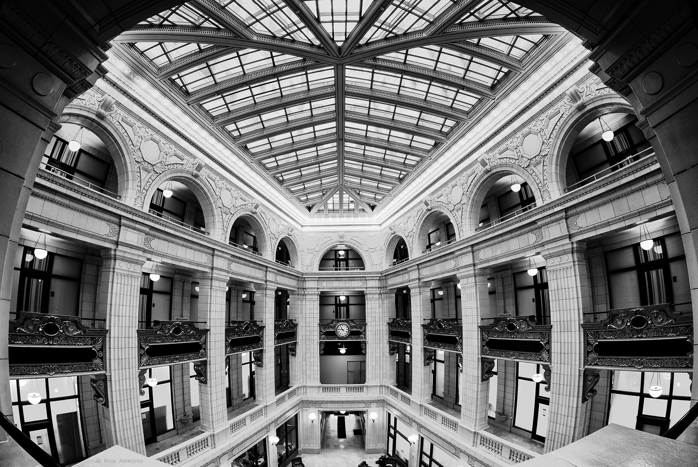

The first Detroit-Clevland passenger air service created.
1926
Detroit boasts the World's best lighted streetways
1926
Houdini dies at Grace Hospital surrounded by family
Detroit's Golden Age
This was a time of great economic growth in America and this time period was especially good to Detroit's economy. Fueled by the giant success in the Auto Industry Detroit was known the world over as an economic power. This spured the building of new office buildings, cultural buildings, entertainment and culural centers, as well as major shopping centers.
David_Whitney Building

The building is named in honor of David Whitney Jr.responsible for much of Detroits early commercial and industrial development.He was one of Detroit’s wealthiest men and largest landowners. What made the building stand out was its dramatic, skylight-covered, four-story atrium lobby this building is one of the first of its era and symbolic of the beggining of Detroit's heyday.